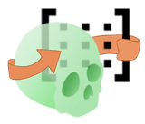

AutoMatrix
Aplica por lotes una o varias transformaciones ITK, ya calculadas en otra parte, a una carpeta de volúmenes y archivos de landmarks: sin red, sin conda, sin GPU.
Aplicación por lotes de una o varias transformaciones ITK a una carpeta de volúmenes y archivos de landmarks. Sin red, sin conda, sin GPU: sitk.ReadTransform + sitk.ResampleImageFilter, y un emparejamiento archivo ↔ matriz mediante la división de nombres. Todo el interés de esta página está en las convenciones de transformación y en la distancia entre lo que promete la interfaz y lo que hace realmente la CLI.
1. Posición en el pipeline
Ningún otro módulo del repositorio llama a AutoMatrix. Es, en cambio, un consumidor de los archivos .tfm que producen los módulos de registro:
| Productor | Archivo producido | Tipo de transformación |
|---|---|---|
AREG_CBCT.py:157 |
<out>/<Region>/<patient>_OutReg/<patient>_<CB|MAND|MAX><add_name>_matrix.tfm |
afín / rígida |
SEMI_ASO_CBCT.py:111 |
<patient>_<add_name>_transform.tfm |
sitk.CompositeTransform (utils.py:732) |
AREG_MRI.py:218 |
<mri>_reg_transform.tfm |
compuesta |
Review.py:509 y VFACE.py:2249 |
registro + ajuste manual | CompositeTransform([areg, nudge.GetInverse()]) |
FlexReg_CLI.py:186 |
<T2><suffix>.tfm |
afín, ya conjugada RAS→LPS e invertida |
La casilla «From AReg» de la interfaz fija a mano la convención de nombres de AREG_CBCT (§6), incluido el valor por defecto de un campo de texto que pertenece a otro módulo.
2. Archivos implicados
Parte de este módulo vive ahora en la capa compartida. ADTLib centraliza lo que varios módulos llevaban en copias: desde aquí, theming.py, method.py, io/fs.py y el contrato de method.py. Su página recoge cuántas copias sustituyó cada archivo.
| Archivo | Función | Dónde se ejecuta |
|---|---|---|
AutoMatrix.py | widget: selectores, validación, espejo, barra de progreso | Python de Slicer |
applyMatrix.py | Automatrix_Method: construye el dict de parámetros de la CLI | igual |
General_tools.py | search y GetPatients: una copia de las versiones de la CLI, usada solo para contar | igual |
Automatrix_CLI.py | todo el trabajo real, 341 líneas | Python de Slicer, SlicerMacroBuildScriptedCLI |
AutoMatrixLogic.process() (AutoMatrix.py:888) es un pass: la lógica vive por completo en Automatrix_Method. Sin conda, sin CUDA: verificado con grep, ninguna aparición de torch, conda ni .pth en AutoMatrix/ ni en Automatrix_CLI/.
3. Formatos de transformación leídos, y los que no
La interfaz (AutoMatrix.py:829) y el README anuncian .npy, .h5, .tfm, .mat, .txt. GetPatients los recoge todos. La CLI hace entonces, sin distinción (Automatrix_CLI.py:258):
try:
tfm = sitk.ReadTransform(matrix)
except Exception as e:
logger.error(f"ERROR reading transform {matrix}: {e}")
continuesitk.ReadTransform solo conoce las clases TransformIO de ITK. Probado con el SimpleITK 2.5.5 de Slicer 5.12:
| Extensión | Resultado real |
|---|---|
.tfm, .txt | OK si y solo si es un Insight Transform File V1.0. Un archivo de texto con una matriz 4×4 en bruto se rechaza: ITK ERROR: Tags must be delimited |
.h5, .hdf5 | OK (HDF5TransformIO) |
.mat | OK (MatlabTransformIO) |
.npy | Falla: Could not create Transform IO object for reading file |
La compatibilidad con .npy está por tanto rota: cada archivo .npy produce una línea de error y se omite. Es una regresión introducida por el paso a la CLI (commit 7bc362b): la versión del widget leía np.load(matrix) y construía un vtkMRMLTransformNode (la rama extension_mat == ".npy", visible con git show 7bc362b^:AutoMatrix/AutoMatrix.py).
Lo mismo ocurre con las «matrices de texto»: eso no es un formato de matriz, es el formato de texto de ITK.
Una lectura correcta devuelve un sitk.Transform cuyo tipo concreto se conserva: isinstance(tfm, sitk.CompositeTransform) funciona, verificado.
4. La convención de transformación: el punto que lo rompe todo
4.1 Dirección de la transformación
ITK es fijo → móvil: un sitk.Transform pasado a un remuestreador hace corresponder el punto físico de salida con el punto físico de entrada del que muestrear. El contenido visible se mueve por tanto según T⁻¹.
El código lo aprovecha en ambos lados, y es coherente:
- Volúmenes (
Automatrix_CLI.py:209):resampler.SetTransform(transform), la transformación se pasa tal cual, el contenido se mueve segúnT⁻¹. - Landmarks (
Automatrix_CLI.py:181):tfm_inverted = transform.GetInverse() point['position'] = list(tfm_inverted.TransformPoint(point['position']))T⁻¹se aplica explícitamente al punto, de modo que se mueve como el contenido del volumen.
Idea clave: el mismo .tfm aplicado a un escaneo y a sus landmarks los mueve con el mismo movimiento. Es la propiedad que hace utilizable el módulo, y es también el único lugar del código donde aparece una inversión.
GetInverse() puede lanzar RuntimeError (transformación no invertible: campo de desplazamiento denso, B-spline). El caso se captura y el archivo de landmarks simplemente se omite con una advertencia: el volumen correspondiente, en cambio, habrá sido transformado. Las dos salidas pueden por tanto desincronizarse en silencio.
4.2 RAS / LPS: dónde se produce el volteo, en ninguna parte
No hay volteo en AutoMatrix. Es correcto, y he aquí por qué:
- Los archivos
.tfmde ITK están en LPS por construcción. sitk.ReadImage/WriteImagetrabajan en LPS. Ambos lados coinciden, nada que hacer para los volúmenes.- Los archivos
.mrk.jsondel repositorio están fijados a LPS en todas partes:ALI_CBCT/ALI_CBCT_utils/io.py:39,ALI_IOS/ALI_IOS_utils/io.py:74,mgl_patch.py:184,VFACE/functionaq3dc.py#L1733y, puesto que ASO_CBCT y AREG_CBCT reexportan ahoraWriteJsonen lugar de llevar el suyo,ADTLib/io/landmarks.py:92. Es también el valor por defecto de Slicer al escribir. Así,point['position']ya está en LPS, y aplicarlo directamente a una transformación ITK es correcto.
Lo frágil es que el campo coordinateSystem nunca se lee. FlexReg sí lo lee (FlexReg.py:2447); AutoMatrix no. Un json que declare "coordinateSystem": "RAS", como escriben anotaciones más antiguas u otras herramientas, se transformará con x e y de signo equivocado, sin ningún mensaje. El archivo de salida incluso conservará su coordinateSystem: RAS original, ya que el json se relee y se reescribe tal cual.
A modo de referencia, los módulos que producen las matrices hacen ellos mismos el volteo: FlexReg_CLI.py:186 calcula flip @ M @ flip con flip = np.diag([-1,-1,1,1]) y luego invierte, antes de escribir el .tfm. AutoMatrix consume el resultado de ese trabajo y por tanto no tiene nada que rehacer.
4.3 Composición
No hay ninguna. Cuando un paciente tiene varias matrices, el bucle (Automatrix_CLI.py:256) aplica cada una al archivo de entrada original, de forma independiente, produciendo una salida por matriz. No hay encadenamiento.
La única composición que existe es la que ITK ya ha hecho: un .tfm que contiene varias transformaciones se relee como un sitk.CompositeTransform y se aplica en su conjunto.
4.4 Harden
Ninguno. Ya no hay vtkMRMLTransformNode en el pipeline. La versión anterior a la CLI creaba uno y hacía model.SetAndObserveTransformNodeID(...) y luego model.HardenTransform() antes de slicer.util.exportNode(..., world=True). Todo ese bloque ha desaparecido. El método saveOutput del widget (AutoMatrix.py:843), que llamaba a exportNode, sigue ahí pero ya no se llama: código muerto.
5. Tipos de datos tratados
GetPatients recoge .vtk .vtp .stl .off .obj .nii .nii.gz .nrrd .mrk.json (Automatrix_CLI.py:77). La CLI solo distingue entonces dos casos:
is_landmark = scan.endswith(".mrk.json")
...
image = sitk.ReadImage(scan) # everything elseLas mallas ya no se procesan. Probado: sitk.ReadImage sobre un vtkPolyData escrito como .vtk falla con sitk::ERROR: Unable to determine ImageIO reader. Lo mismo con .stl, .obj, .off, .vtp. La excepción se captura (Automatrix_CLI.py:284), se registra como ERROR processing ... y el archivo se omite. Sin embargo, la interfaz sigue ofreciéndolas, CheckGoodEntre las valida, el contador de progreso las cuenta y README.md:422 sigue anunciando la compatibilidad con IOS.
Es la segunda regresión del paso a la CLI: la versión del widget cargaba las mallas con slicer.util.loadModel y hacía un verdadero HardenTransform. Un archivo .vtk de structured points (una imagen, no una superficie), en cambio, pasaría por VTKImageIO.
| Tipo | Leído por | Transformado por | Escrito por |
|---|---|---|---|
.nii, .nii.gz, .nrrd | sitk.ReadImage | ResampleImageFilter | sitk.WriteImage |
.mrk.json | json.load, markups[0]['controlPoints'] | T⁻¹.TransformPoint punto a punto | json.dump(indent=2) |
.vtk .vtp .stl .off .obj | : | : | : (fallo silencioso) |
Para los landmarks, solo se procesa markups[0], y solo se mueven los puntos cuyo positionStatus == 'defined'; los demás se dejan en su sitio, es decir, en el sistema de coordenadas antiguo.
6. Remuestreo e imagen de referencia
resampler.SetInterpolator(sitk.sitkNearestNeighbor if is_seg else sitk.sitkLinear)
resampler.SetDefaultPixelValue(0)
resampler.SetReferenceImage(reference)El interpolador procede de la casilla «Check this box if using segmentations» (is_seg). Vecino más próximo para un mapa de etiquetas, lineal en los demás casos: correcto, y le corresponde al usuario declararlo, nada se detecta automáticamente.
La rejilla de salida se elige así (Automatrix_CLI.py:196 y :301), por orden decreciente de prioridad:
- Transformación compuesta → la referencia se deduce de la ruta de la matriz:
matrix.replace("_transform.tfm", ".nii.gz"), con.niicomo alternativa. No es un error: ASO_CBCT escribe<patient>_<add>_transform.tfmy<patient>_<add>.nii.gzen la misma carpeta, de modo que el escaneo orientado que está junto a la matriz es exactamente la rejilla adecuada. Si falta el archivo, se emite una advertencia y se recurre a la imagen de entrada. - Nombre de matriz que contiene
mirror(sin distinguir mayúsculas) → la referencia se fuerza a la imagen de entrada, el archivo de referencia de la interfaz se ignora. Despacho basado en el nombre del archivo. - Archivo de referencia proporcionado (
reference_file != "None", el valor por defecto del campo,AutoMatrix.ui:255) → su geometría se impone a todas las salidas. - En caso contrario, la propia imagen de entrada: tamaño, espaciado, origen y dirección sin cambios. Una transformación que saque contenido del campo de visión lo hace desaparecer, rellenado con
DefaultPixelValue = 0.
La rama reference is None de ResampleImage (Automatrix_CLI.py:220) es inalcanzable: el llamante siempre pasa una referencia. Además es errónea: hace new_origin = transform.TransformPoint(image.GetOrigin()) cuando la convención del remuestreador exigiría T⁻¹.
7. Modo espejo
Mirror() (AutoMatrix.py:307) descarga Mirror.zip de una release personal de GitHub (GaelleLeroux/DCBIA_Apply_matrix), la descomprime en <Documents>/SlicerDownloads/Mirror_matrix/ y rellena el campo de la matriz con Mirror/Matrix_mirror.tfm. El contenido real del archivo:
#Insight Transform File V1.0
Transform: AffineTransform_double_3_3
Parameters: -1 0 0 0 1 0 0 0 1 0 0 0
FixedParameters: 0 0 0Es diag(-1, 1, 1) en LPS, centrada en el origen: una reflexión respecto al plano x_LPS = 0. Como x_LPS apunta hacia la izquierda del paciente, es efectivamente un intercambio izquierda/derecha, pero respecto al plano sagital del origen del sistema del mundo, no del plano sagital propio del paciente. Un paciente que no esté centrado sale trasladado además de reflejado, y un registro posterior tiene que corregirlo.
El determinante es −1. Para un volumen, ResampleImageFilter lo maneja sin ningún problema. Para una malla, invertiría la orientación de las caras y las normales: cuestión irrelevante aquí, ya que las mallas ya no se procesan.
El modo fuerza ComboBoxMatrix a «File», el sufijo a _mir y desmarca checkBoxMatrixName.
8. Emparejamiento archivo ↔ matriz
GetPatients (Automatrix_CLI.py:65) construye {patient_key: {'scan': [...], 'matrix': [...]}}. La clave se obtiene mediante una cadena de llamadas a .split() que no es la misma en ambos lados:
| Elementos eliminados (por orden) | |
|---|---|
| escaneo | _Seg _seg _Scan _scan _Or _OR _MAND _MD _MAX _MX _CB _lm _T2 _T1 _Cl _MR, luego .split('.')[0], luego _T0…_T49 |
| matriz | _SegOr _Left _left _Right _right _Or _OR _MAND _MD _MAX _MX _CB _lm _T2 _T1 _Cl _MA _Mir _mir _Mirror _mirror _MR, luego .split('.')[0], luego _T0…_T49 |
GetPatients quita elementos distintos del nombre del escaneo y del nombre de la matriz para obtener la clave del paciente. Aquí se recorta _T1 del lado del escaneo y _left del lado de la matriz: ambas claves convergen en patient1. Sin marca temporal (patient1_MA.nii.gz ↔ patient1_MA.tfm), las listas divergen: clave patient1_MA del lado del escaneo frente a patient1 del lado de la matriz, sin coincidencia y sin ningún mensaje.Las listas divergen: el lado de la matriz quita _MA, _Left/_Right, las variantes _Mir y _SegOr; el lado del escaneo quita _Seg, _Scan, _lm. De ahí la exigencia del README: primero el nombre del paciente, un guion bajo y después el resto. El ejemplo patient1_T1_MA.nii.gz ↔ patient1_left_MA.tfm funciona porque se recorta _T1 del lado del escaneo y _left del lado de la matriz. Pero patient1_MA.nii.gz sin marca temporal da la clave patient1_MA del lado del escaneo y patient1 del lado de la matriz: no se emparejará ninguna matriz, sin ningún mensaje.
Cuando la ruta de la matriz es un archivo y no una carpeta, se asocia a todos los pacientes (Automatrix_CLI.py:172).
Código duplicado que ya ha divergido. GetPatients existe en dos copias idénticas salvo por un elemento: la versión de la CLI quita un _SegOr inicial, General_tools.py:11 no. Y es la copia de General_tools la que alimenta NbScan, de modo que el denominador de la barra de progreso puede diferir del número de archivos realmente procesados.
La vía «From AReg»
suffix_map (Automatrix_CLI.py:232) se salta toda la lógica de emparejamiento para los archivos de landmarks:
suffix_map = {
"_CB": ("Cranial Base", "CBReg_matrix.tfm"),
"_L": ("Maxilla", "MAXReg_matrix.tfm"),
"_U": ("Mandible", "MANDReg_matrix.tfm"),
}
matrix_path = os.path.join(args.matrix_lineEdit, subdir,
f"{patient_id}_OutReg", f"{patient_id}_{matrix_filename}")Tres problemas, todos verificables:
_Ly_Uestán intercambiados respecto a la convención usada en el resto del repositorio.AREG_IOS/AREG_IOS_utils/dataset.py:222yAREG/AREG_Method/IOS.py:117definenLower = ["Lower", "_L", "L_", "Mandibule", "Md"]yUpper = ["Upper", "_U", "U_", "Maxilla", "Mx"]. Aquí_Lapunta a Maxilla y_Ua Mandible.matrix_lineEditno existe en elargparsede la CLI (Automatrix_CLI.py:294: los argumentos soninput_patient, input_matrix, reference_file, suffix, matrix_name, fromAreg, output_folder, log_path, is_seg). Esta rama lanza por tantoAttributeErroren cuanto se toma.- Nunca se toma:
CheckBoxSuffixBased(etiquetada «From AReg») se oculta ensetupconself.ui.CheckBoxSuffixBased.setVisible(False)(AutoMatrix.py:298), de modo quefromAreges siempre"False". Código muerto, lo que explica que no se hayan notado 1 y 2.
El nombre MAXReg_matrix.tfm sí coincide con la realidad de AREG_CBCT: escribe patient + "_" + reg_type + add_name + "_matrix.tfm" con add_name por defecto Reg (AREG.ui:571), de modo que esta vía depende del valor por defecto de un campo de texto editable que pertenece a otro módulo.
9. Salidas
matrix_suffix = f"_{Path(matrix).stem}" if args.matrix_name == "True" else ""
out_suffix = f"{args.suffix}{matrix_suffix}"
out_file = outpath.split(extension_scan)[0] + out_suffix + extension_scanEl árbol de carpetas de entrada se reproduce en la carpeta de salida (scan.replace(input_patient, output_folder)). Sufijo por defecto _apply, checkBoxMatrixName marcada por defecto (AutoMatrix.ui:342).
El README está obsoleto en este punto: anuncia patient1_T1_MA_apply_matrix1.nii.gz. La versión antigua extraía la parte del nombre de la matriz posterior a la clave del paciente (basename.split(ext)[0].split(key)[1]); la CLI usa todo el Path(matrix).stem. La salida real para patient1_MAXReg_matrix.tfm es por tanto patient1_T1_MA_apply_patient1_MAXReg_matrix.nii.gz.
Desmarcar «Add matrix name» con varias matrices por paciente hace que las salidas se sobrescriban entre sí: el mismo nombre de archivo para cada matriz.
Nunca se produce ningún .tfm: AutoMatrix consume transformaciones, no escribe ninguna.
10. Lo que se predice frente a lo que se calcula
| Bloque | Naturaleza | Dónde |
|---|---|---|
| Lectura de transformaciones | calculado TransformIO de ITK | CLI |
| Emparejamiento archivo ↔ matriz | calculado división de cadenas | CLI (y una copia divergente en el widget) |
| Volúmenes | calculado sitk.ResampleImageFilter, lineal o vecino más próximo | CLI |
| Landmarks | calculado T⁻¹.TransformPoint por punto | CLI |
| Matriz espejo | calculado .tfm fijo descargado, diag(-1,1,1) | Release de GitHub |
Ninguna red neuronal en ninguna parte.
11. Entorno
Nada que instalar: SimpleITK, numpy, vtk, qt ya están en Slicer. Sin conda, sin CUDA. El único acceso a la red es la descarga de la matriz espejo, y solo si la casilla Mirror está marcada.
La barra de progreso no se alimenta de un archivo de registro pese al parámetro log_path: DisplayAutomatrix.isProgress (Progress.py:40) comprueba la mtime de log_path, pero la CLI nunca escribe en ese archivo. El progreso fluye en realidad por la secuencia <filter-progress>0 / 2 / 0</filter-progress> que emite la CLI tras cada escaneo (Automatrix_CLI.py:287) y el if kwds["progress"] == 200 de isProgress: un protocolo indirecto y frágil que depende de un time.sleep(0.2) entre cada impresión.
12. Trampas y puntos frágiles
.npyno funciona (§3), aunque lo anuncian la interfaz y el README.- Las mallas ya no funcionan (§5), aunque lo anuncian la interfaz y el README. Regresión del commit
7bc362b. .txtno acepta una matriz 4×4 en bruto (§3), solo el formato de texto de ITK.- El
coordinateSystemde los landmarks nunca se lee (§4.2). - Sin composición: N matrices para un paciente dan N archivos, no una cadena (§4.3).
- Salidas sobrescritas si
checkBoxMatrixNameestá desmarcada con varias matrices (§9). OnEndProcessdivide porself.nb_scans(AutoMatrix.py:745) sin protección: una carpeta de entrada vacía provoca unZeroDivisionErroral final del procesamiento.CheckGoodEntrees lógicamente errónea (AutoMatrix.py:790): la prueba de extensión eslen(dico['.vtk'])==0 and len(dico['.vtp']) and len(dico['.stl']) and …, donde solo el primer término es una comparación. Los demás son enteros evaluados como booleanos, por lo que la advertencia «Folder empty or wrong type» solo salta en una conjunción improbable. Una carpeta realmente vacía pasa la validación.onPredictButtonno se detiene ante un error:TestProcessdevuelve una tupla(ok, out), de modo que la comprobaciónisinstance(error, str)deAutoMatrix.py:748es siempre falsa, y el procesamiento arranca incluso con campos vacíos..split(extension_scan)[0]corta en la primera aparición: una ruta cuya carpeta contenga la misma subcadena que la extensión quedaría truncada.- Landmarks no
defineddejados en el sistema de coordenadas antiguo, mezclados con puntos transformados en el mismo archivo (§5). - La vía «From AReg», muerta y rota (§8).
- Código muerto:
saveOutput/UpdateProgressBar/UpdateTimedel widget,AutoMatrixLogic.process, la ramareference is NonedeResampleImage,registerSampleDataque referencia archivos.pngausentes. - Los metadatos de
Automatrix_CLI.xmlsiguen siendo los de la plantilla de Slicer (FirstName LastName (Institution),NIH grant NXNNXXNNNNNN-NNXN).
13. Literatura
Ningún artículo cubre AutoMatrix: es una utilidad de aplicación por lotes escrita para el laboratorio (Gaëlle Leroux, UoM/DCBIA). El contenido científico vive por completo en los módulos que producen las matrices, AREG, ASO, MRI2CBCT, FlexReg, y se trata en sus páginas respectivas.
Para la convención de transformación, la referencia actualizada es la documentación de ITK / Slicer más que un artículo:
- Transforms: guía de usuario de Slicer (dirección fijo→móvil, RAS de Slicer frente a LPS de ITK)
- Coordinate systems: guía para desarrolladores de Slicer
- SimpleITK: Transforms and Resampling
- SlicerAutomatedDentalTools
- DCBIA_Apply_matrix: el repositorio original, que aún aloja la matriz espejo y los conjuntos de prueba citados por el README
Bibliografía completa: SOURCES.html, búsqueda hecha, resultado negativo: ningún trabajo describe AutoMatrix, y ninguno lo cita. No se recuperó nada en esta carpeta, porque no hay nada que recuperar.